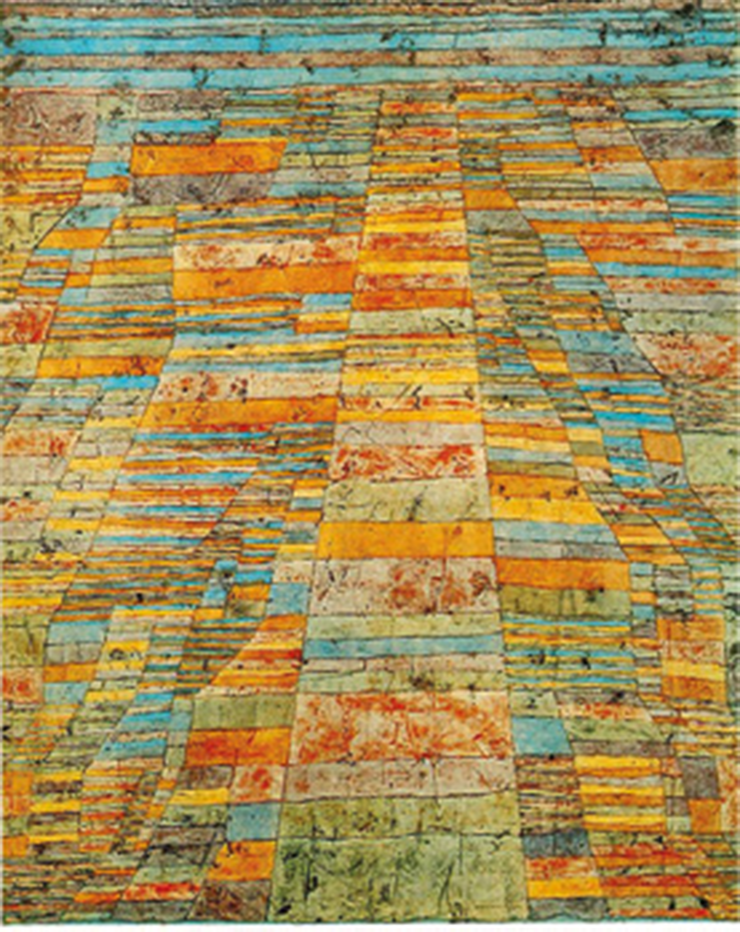
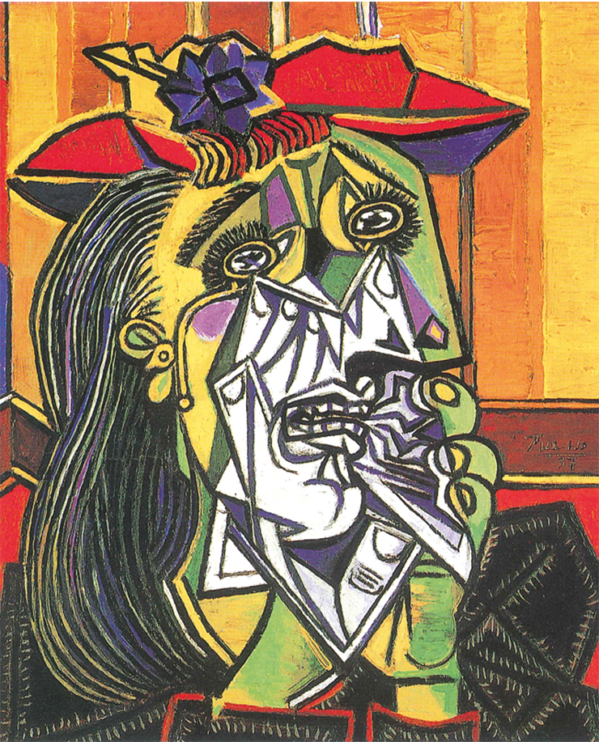
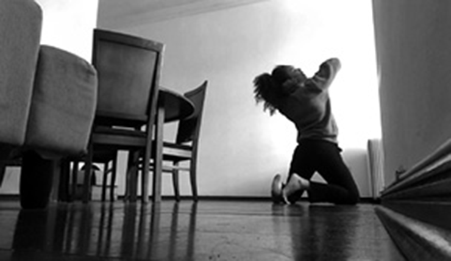
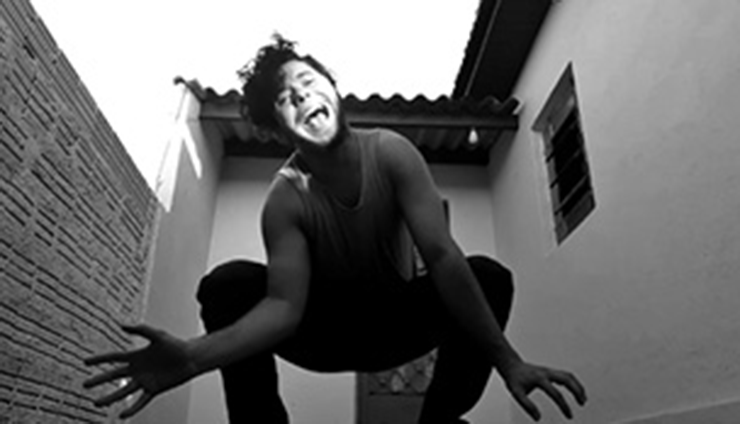
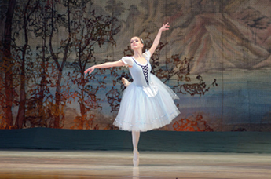
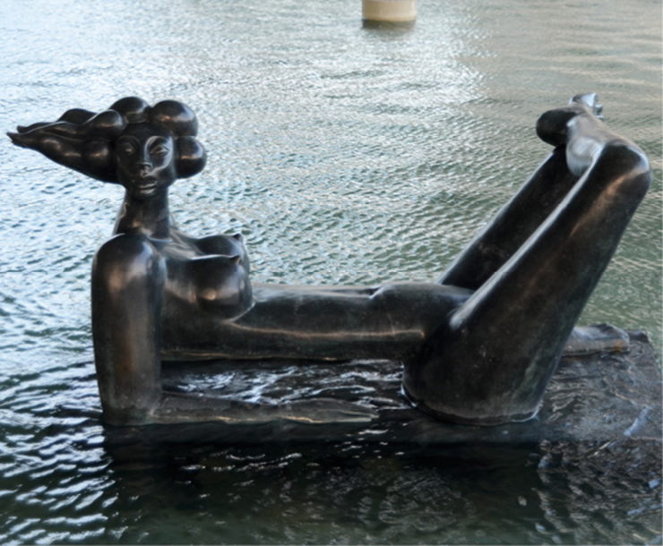

Quando começamos a estudar Arte, precisamos considerar, antes de tudo, que ela comporta em si diversas formas de comunicação ou expressão, que são chamadas linguagens.
De modo geral, podemos identificar quatro linguagens: as artes visuais (pintura, desenho, arquitetura, escultura, fotografia, entre outras), a música, o teatro e a dança. Algumas dessas linguagens podem ser integradas, como ocorre com o cinema, que une fotografia, música, teatro e outras formas de expressão artística.
Não é tarefa fácil conceituar Arte. Você alguma vez já tentou explicar a alguém o que é Arte? Neste capítulo, tentaremos entender um pouco mais essa complexa área.
Neste capítulo, serão abordadas as habilidades
DUCHAMP, Marcel. A fonte, 1917, cerâmica esmaltada. Museu de Arte Moderna
de São Francisco, São Francisco, Estados Unidos. © Association Marcel Duchamp / AUTVIS, Brasil, 2019.
FOTO: FHKE (CC BY-SA2.0)/ Wikimedia Commons
A fonte é uma obra que foi produzida pelo artista francês Marcel Duchamp
(1887-1968) em 1917, considerado o precursor do movimento que surgiria apenas nos anos 1960: a
arte conceitual. Trata-sede um mictório de porcelana com a assinatura “R. Mutt” e, na época,
tal obra foi apresentada para participar da primeira exposição anual da Sociedade de Artistas
Independentes, em 1917, que aconteceria no Grand Central Palace, em Nova York. A fonte foi rejeitada
por um comitê, embora, segundo as regras, todas as obras seriam aceitas mediante o pagamento de uma
taxa pelos artistas.
Afinal, o que é Arte?
Em primeiro lugar, assim como acontece com uma língua, a Arte se modifica conforme os contextos social e histórico de determinada época. Assim, muitas formas de expressão que eram comuns em certo período hoje podem não ser mais utilizadas ou ter sofrido adaptações.
Na Grécia Antiga, por exemplo, os artistas faziam imitação da natureza (também chamada mimese), isto é, procuravam representar a aparência externa das coisas do mundo. Embora essa prática tenha sido criticada por filósofos como Platão (428/427-348/347) – pois não reflete o conteúdo, mas a forma – a imitação é, ainda hoje, reverenciada por muitos como uma capacidade aprimorada do artista.
Na pintura, esse tipo de retrato da aparência externa ficou conhecido como figurativismo realista. Com o aperfeiçoamento da técnica da perspectiva durante o Renascimento, criou-se a ilusão de profundidade, o que deu ares mais reais à imitação. Contudo, com a invenção da fotografia no final do século XIX, tornou-se possível imitar a realidade de forma rápida e eficiente, dessa forma os pintores tiveram de buscar novas linguagens de comunicação visual. Passou-se de uma representação do visível para um não lugar, para um território em que não há mais fronteiras.
MILLET, Jean-François. As respigadoras, 1857, óleo sobre tela. Museu de Orsay, Paris, França.
Millet, Jean-François/Museu de Orsay/Web Gallery of Art
ADAMS, Ansel. Farm, farm workers [Fazenda, trabalhadores rurais], Manzanar Relocation Center, Califórnia, Estados Unidos.
Ansel Adams/Library of Congress 
KLEE, Paul. Estrada principal e estradas secundárias, 1929, óleo sobre tela. Museu Ludwig, Colônia, Alemanh
Museu Ludwig, Colônia, Alemanha
Arte é uma combinação entre conceitos, expressão do artista, fruição do espectador, elementos formais, vocabulários e técnicas.
Existe uma ampla discussão entre historiadores, filósofos, artistas e outros profissionais envolvidos no campo artístico sobre o que é e o que pode ou não ser considerado arte. As opiniões e definições divergem e variam conforme o contexto sócio-histórico. Isso porque a arte é uma prática social e historicamente situada e, como tal, está sujeita às transformações de seu tempo e à cultura vigente.
De forma geral, podemos dizer que a obra de arte – seja ela um produto acabado, seja de cunho conceitual (como A fonte, de Duchamp) – expressa a visão de mundo do artista e também a do espectador, pela recepção da obra, em um processo que funciona como um diálogo. Assim, os sentidos de uma obra de arte somente se revelam quando a vemos, a ouvimos e a tocamos, ou seja, quando a experimentamos. Em arte, esse processo de experimentação é chamado fruição. Por meio dele, podemos dizer, somos capazes de entender e experimentar um pouco como o outro e as diferentes culturas veem o mundo e se expressam artisticamente. Para o filósofo alemão Immanuel Kant (1724-1804), a arte (e, por conseguinte, a apreciação estética ou a fruição de uma obra de art tem seu valor em si própria, ou seja, ela não está relacionada à racionalidade instrumental, segundo a qual o que fazemos deve necessariamente ter uma utilidade formal. Nesse sentido, a arte não estaria submetida às regras de mercado, que lhe atribui um valor fora de si própria, como se verificou ao longo dos últimos séculos.
Gosto e beleza de quem e para quem?
É comum dizer que “gosto não se discute”, o que tem bastante fundamento, pois o gosto não tem uma base científica. No entanto, na prática, não agimos assim. Estamos sempre debatendo o gosto, o que não exclui a noção de beleza. Contudo, a definição de beleza, assim como a de arte, também é uma construção social, diretamente relacionada aos valores históricos, econômicos, sociais e culturais dos povos, e se modifica ao longo do tempo. A beleza é um tema de estudo da Estética, que, por sua vez, é uma área da Filosofia.
O sociólogo francês Émile Durkheim (1858-1917) acreditava que a arte deveria ser vista como um fato social. Nesse sentido, o gosto seria formado com base nos hábitos e nas atitudes comumente aceitos nos grupos sociais aos quais as pessoas pertencem. Nos estudos críticos, como os da Escola de Frankfurt, a mídia e os valores dos grupos dominantes exercem grande influência no comportamento das pessoas, inclusive em seus juízos de gosto. A Arte teria, nesse contexto, uma função também política, uma vez que possibilita questionar os padrões estabelecidos e as diferenças sociais existentes no sistema em que vivemos.
PICASSO, Pablo. Mulher chorando, 1937, óleo sobre tela. TATE, Londres, Inglaterra.
© Succession Pablo Picasso / AUTVIS, Brasil, 2019.
Manifestações artísticas em uma pandemia
A arte, portanto, é aberta a diferentes expressões por meio das muitas linguagens. Por meio dela, artistas expressam sua visão de mundo, sentimentos, angústias e emoções. Assim como textos têm influência da época em que são escritos, a arte e seus produtos, suas manifestações também têm essa relação com o momento.
Em 2020, o mundo foi surpreendido por uma pandemia provocada por um vírus que ficou conhecido como novo coronavírus.
A Covid-19, nome que foi dado à doença causada por esse vírus, se espalhou de maneira assustadora e muito rapidamente por todos os países, deixando a população mundial em estado de alerta e medo. Entre as formas de se evitar o contato com o vírus e de diminuir a sua propagação, a OMS (Organização Mundial da Saúd recomendou, além do uso de máscaras que tampassem nariz e boca e o uso de álcool gel, que as pessoas ficassem em quarentena em casa e apenas saíssem em casos necessários, evitando assim o contato social, na tentativa de conter a propagação do vírus. No início, a hashtag #fiqueemcasa foi ganhando força. Com isso, diversos estabelecimentos e instituições ficaram fechados por períodos longos, e outros tiveram de reduzir o número de acessos, evitando aglomerações e grande número de pessoas em espaços fechados.
Com o passar do tempo, as pessoas precisaram reorganizar as suas vidas, profissional e socialmente, e foram aos poucos encontrando meios de sobreviver ao caos mundialmente instaurado.
Nesse cenário, artistas do mundo todo passaram a se organizar para que as produções artísticas pudessem continuar acontecendo e eles pudessem manter contato com o público. Assim, grupos de músicos, orquestras, grupos teatrais e de dança começaram a fazer apresentações on-line, utilizando plataformas de compartilhamento de vídeos.
Em 2020, foi criado o Festival de Teatro On-line em Tempo Real do Rio de Janeiro, realizado pela Cia Banquete Cultural, cujo objetivo é promover as artes cênicas com o uso de novas tecnologias para exibição on-line (real ou gravadas). Artistas passaram a se apresentar virtualmente, com dia e hora marcados para que seus shows pudessem ser vistos em tempo real pelo público. Uma grande vantagem do uso dessas ferramentas é ampliação do público, uma vez que possibilitou atingir um número maior de pessoas, que não precisariam se deslocar para assistir às apresentações.
Da mesma maneira, com a mesma preocupação de se manter contato com o público e buscando mitigar os efeitos emocionais do impacto do isolamento social durante a pandemia, museus, galerias e artistas visuais passaram a organizar exposições dos seus trabalhos em sites da internet.
Além das exposições de arte e apresentações, muitos cursos na área também foram ministrados por essas pessoas que precisavam continuar trabalhando e se expressando artisticamente.

As visitas aos museus, por exemplo, tinham protocolos a ser seguidos e as pessoas deveriam manter distanciamento.
MikeDotta/Shutterstock.com  
Apresentação da videodança Outros (2021), da Companhia Nua, encenada no período do pandemia do novo coronavírus.
Lucas D. Manfré/Cia Nua de dança-teatro
A pandemia também possibilitou a criação de um museu de artes visuais especificamente digital, The Covid Art Museum (CAM), conhecido por ser o primeiro do mundo a nascer durante a quarentena que se iniciou em 2020. Pensado pelo trio de publicitários espanhóis Emma Calvo, Irene Llorca e José Guerrero, a ideia surgiu quando perceberam que as pessoas estavam fazendo uso da arte como ferramenta de escape durante o confinamento.
Segundo os criadores do museu, qualquer pessoa pode inscrever sua arte pelo site, mas, antes de publicarem o trabalho, há uma curadoria realizada por eles mesmos. O critério utilizado na escolha das obras a serem exibidas são: a produção durante o período de quarentena e que o trabalho artístico reflita a situação pela qual todos estão passando e também os sentimentos, como a solidão, a angústia, o isolamento. Entre as obras expostas estão pinturas, desenhos, fotografias, animações, vídeos entre outros.
No Brasil, também foi criado o primeiro museu digital para expor obras criadas por artistas nacionais durante o período de isolamento devido à pandemia. Chamado de Museu do Isolamento, o espaço tem como um de seus objetivos viabilizar a exibição de trabalhos de artistas que continuam fazendo arte nesse período de isolamento social, além de proporcionar um espaço de visibilidade amplo que poderá atingir um público maior. Liderado por Luiza Adas, esse projeto utiliza a plataforma digital Instagram para a divulgação e publicação de obras. Antes de serem publicados, esses trabalhos passam por curadoria e, só depois, são inseridos na rede social.

Arte feita por Sulamita Batista que busca expressar um sentimento nacional sobre o “novo” normal.
@surucuina/Museu do Isolamento

Obra “O silencioso grito de socorro”. Arte feita por Eduardo Morais e publicada pelo Museu do Isolamento.
José Eduardo Morais/belo.e.bizarro
Esses são alguns exemplos de como os artistas conseguiram se reorganizar para continuar fazendo arte, já que é uma atividade que depende do público para continuar fazendo sentido ao que se propõe. Além desses modelos de exposição e apresentação, há muitos outros, que envolvem principalmente artistas anônimos, que fazem projeções, tocam música e se apresentam das janelas dos seus apartamentos, por exemplo. Esses artistas, muito provavelmente, buscam além do reconhecimento do seu trabalho pelo público, uma forma de alimentar a sua saúde mental, que também foi tão abalada no período de quarentena, canalizando na arte as suas angústias e experiências.
Arte por dentro
Podemos ler todas as obras de arte de qualquer linguagem: artes visuais, teatro, dança e música. Para lê-las, podemos nos familiarizar melhor com a linguagem e aprender alguns dos elementos formais que as compõem. Evidentemente, podemos apreciar qualquer obra sem conhecer esses elementos, mas a fruição não será a mesma.
Os elementos formais dizem respeito à estrutura que está por trás (ou por dentro) de toda obra de arte. Mas que elementos são esses? Ao longo dos capítulos, veremos que os elementos formais são:
Assim, cada linguagem tem seus elementos formais, que possibilitam ao artista criar. Além disso, cada gênero artístico, dentro de uma linguagem artística, tem um vocabulário próprio e se comunica de forma distinta. Por exemplo, o vocabulário corporal de que um dançarino ou uma dançarina de balé clássico utiliza para comunicar sua arte remete-se a elementos formais bastante distintos daqueles utilizados na dança de rua contemporânea. Igualmente, o vocabulário de um escultor grego do período clássico difere do de um escultor brasileiro contemporâneo.
Observe as imagens desta página.
Para examinarmos os elementos formais ou as técnicas de arte, vamos utilizar a seção “Por dentro da arte”.
Cena do balé clássico Giselle.
Igor Bulgarin/Shutterstock.com
Breakdance é um estilo de dança de rua, parte da cultura hip-hop.
DavidTB/Shutterstock.com
HORA, Abelardo da. Mulher reclinada IV, 2010, bronze fundido. Estação Cabo Branco, João Pessoa, Paraíba.
Abelardo da Hora. Foto: Lucas Carvalho | Geo Imagens
A cena do balé clássico Giselle contrasta com a da jovem dançando break. Do mesmo modo, a escultura clássica Vênus de Milo tem uma estética bem diferente da obra Mulher reclinada IV, do escultor brasileiro Abelardo da Hora.
Um dos elementos formais mais importantes nas artes
visuais, principalmente na pintura, é a cor. A cor é classificada, com relação à sua origem, em
dois grandes grupos ou sistemas: um para cores oriundas da luz emitida por corpos e outro para
cores oriundas de pigmentos. A cor obtida pela emissão da luz é conhecida como sistema de
cor-luz e trabalha por adição, ou seja, se somarmos as três cores básicas, nas proporções
corretas, atingiremos a cor branca. Já a cor obtida por pigmento é conhecida como sistema de
cor-pigmento e trabalha por subtração, isto é, se somarmos as três cores, nas proporções
corretas, teremos preto (desde que se usem pigmentos apropriados e de boa qualidad. A cor obtida
por meio da luz deriva da luz do Sol, das lâmpadas e também dos monitores de computadores,
televisões, enfim, de tudo o que emite luz. A cor obtida pelo pigmento está nas pinturas, nos
impressos, nos tecidos, na tinta das paredes, ou seja, em tudo o que usa o pigmento como base.
Como sabemos, existem cores básicas e secundárias que variam conforme o
sistema. No sistema cor-luz, as cores básicas são vermelho, verde e azul. Por isso, esse sistema
também é conhecido como RGB (Red/vermelho; Green/verde;
Blue/azul). Nele, as cores secundárias são amarelo, ciano e magenta. Já no sistema
cor-pigmento, as cores primárias são magenta, amarelo e ciano, ao passo que as secundárias são
vermelho, verde e azul. Esse sistema também é chamado de CMY (Cyan/ciano,
Magenta/magenta; Yellow/amarelo). A versão industrial do CMY é o
CMYK, no qual o preto é adicionado, e não obtido por meio de mistura. Assim, o CMYK é baseado em
quatro cores e foi criado como uma opção mais barata, pois não necessita de pigmentos puros e
caros, sendo usado para impressões em larga escala.
Também existem cores quentes e frias. As cores quentes são o vermelho
e o amarelo ou aquelas em que elas são predominantes, ao passo que as cores frias são o
azul e o verde ou as cores nas quais elas predominam. Além disso, há outras classificações para as cores: opostas (ou
complementares) e adjacentes. Cores opostas são aquelas que se encontram em ângulo de
180° no círculo cromático, isto é, estão em posições opostas. Duas cores primárias
somadas dão origem a uma cor secundária. A cor primária que está em oposição a essa cor
secundária (formada pela soma das outras duas cores primárias) é sua complementar ou oposta. Por
exemplo, a soma de magenta e amarelo forma o vermelho, que é oposto ou complementar ao ciano (a
outra cor primári, que fica em um ângulo de 180° em relação ao vermelho. Já cores adjacentes são
as que estão ao lado de determinada cor no círculo cromático. Por exemplo, o verde-amarelado é
adjacente ao amarelo, pois está ao seu lado no círculo. A cor adjacente sempre tem, na
composição, metade da cor anterior e metade da cor posterior a ela e, por causa da proximidade,
combina harmonicamente com suas vizinhas. À esquerda, o sistema cor-luz (RGB); à direita, o sistema cor-pigmento
(CMYK). petrroudny/iStockphoto.com

Superação
SuperaçãoUnesp 2015 A fonte do conceito de autonomia da arte é o pensamento estético de Kant. Praticamente tudo o que fazemos na vida é o oposto da apreciação estética, pois praticamente tudo o que fazemos serve para alguma coisa, ainda que apenas para satisfazer um desejo. Enquanto objeto de apreciação estética, uma coisa não obedece a essa razão instrumental: enquanto tal, ela não serve para nada, ela vale por si. As hierarquias que entram em jogo nas coisas que obedecem à razão instrumental, isto é, nas coisas de que nos servimos, não entram em jogo nas obras de arte tomadas enquanto tais. Sendo assim, a luta contra a autonomia da arte tem por fim submeter também a arte à razão instrumental, isto é, tem por fim recusar também à arte a dimensão em virtude da qual, sem servir para nada, ela vale por si. Trata-se, em suma, da luta pelo empobrecimento do mundo.
(Antônio Cícero. “A autonomia da arte”. Folha de S.Paulo, 13.12.2008. Adaptado.).
De acordo com a análise do autor,
- a racionalidade instrumental, sob o ponto de vista da filosofia de Kant, fornece os fundamentos para a apreciação estética.
- um mundo empobrecido seria aquele em que ocorre o esvaziamento do campo estético de suas qualidades intrínsecas.
- a transformação da arte em espetáculo da indústria cultural é um critério adequado para a avaliação de sua condição autônoma.
- o critério mais adequado para a apreciação estética consiste em sua validação pelo gosto médio do público consumidor.
- a autonomia dos diversos tipos de obra de arte está prioritariamente subordinada à sua valorização como produto no mercado.